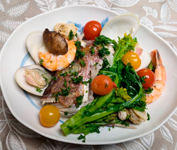

真鯛のアクアパッツァ
- 調理時間：40分
- （一人当たり）
- カロリー：415kcal
- たんぱく質：31.7g
- 脂質：21.7g
- 炭水化物：8.9g
- 塩分：2.2g


＜2人分＞
- 真鯛のアラ（頭）
- 頭1切れ
- ハマグリ
- 150g
- エビ
- 100g
- ほたて（ボイル）
- 60g
- ミニトマト
- 6個
- 菜花
- 40g
- パセリのみじん切り
- 適宜
- オリーブオイル
- 大さじ2
- にんにく
- 1粒
- 白ワイン
- 150ml
- 塩、コショウ
- 少々


- 鯛は鱗を包丁の背で取り、血合いなどを洗い流した後、塩少々（分量外）をふりかけ、15分ほどおいて、水で洗い、ペーパーで水気を拭きとる。
- ハマグリは殻をあわせるようにしっかり洗う。
エビは殻をむいておく。
菜花は食べやすい幅に切る。 - フライパンにスライスしたニンニク、オリーブオイルを入れて弱火で熱し、香りがでてきたら鯛の皮目を下にして軽く皮に焼き目をつけたら裏返し、白ワインを入れて蓋をして蒸し焼きに10分する。
- ③にハマグリ、エビ、ホタテ、ミニトマトを加えて蓋をし、5～8分程蒸し煮し、ハマグリの殻が開いたら仕上げに菜花を加える。
塩、コショウで味をととのえる。 - 器に盛り付け、みじん切りにしたパセリを散らして完成。
真鯛のアクアパッツァ
二十四節季では、1月5日頃からの寒さが厳しくなり始める時期を「小寒」。1月20日頃からの最も寒くなる時期を「大寒」と呼び、つまり、今の時期は一年で最も寒い時期に当たります。冷え症改善には、たんぱく質をしっかり摂ることが大切です。私たちは身体で熱を作ります。体熱が産生されるのは、筋収縮したときなので、筋肉量が少ない人や痩せている人は冷えやすい体質になります。真鯛は良質の高たんぱく質ですし、低脂肪の貝類は年末年始の疲れた胃腸におすすめです。積極的にとりいれましょう。